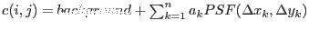
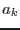
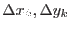
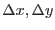

As mentioned in the previous section, omphotom can compute the photometry of a source by fitting the PSF to it, and other close sources may also be included in the fit. This method was included primarily for FAST mode data and High-resolution Imaging mode data, but can also be used for Low-resolution Imaging mode data. for the latter it is recommended that this method is only used for sources with one or more close neighbours, sources near an image edge, or sources affected by scattered-light features, etc.
The counts for a source are obtained by solving the following set of equations for each pixel included in the fit by least-squares-
 , where, the background is either the constant term in the least-squares fit or a fixed value, n the number of sources are included in the fit,  is the central height of the fitted PSF source k and  are the distances from the centre of source k to the image point (i, j) in the x and y directions, respectively. All pixels within a radius of 7 unbinned pixels from the centre of a source are included in the fit.
A discrete PSF function is used based on the PSF image obtained through the CAL subroutine CAL_omGetPSFmap. Interpolation is used to compute the value of the PSF at any , distance from the centre.
The total raw counts of a source k is then equal to the value of multiplied by the total counts in the PSF image within a radius of 12 unbinned pixel from it centre, which has been normalized to a central height of 1.
For the case where also the positions of each source are also to be ``fitted'', a function minimization scheme, using a modified simplex method, is used to determine the best fit coordinates of each source. The function that is minimized carries out the least-squares fit just discussed, using the current coordinates of each source, and the function value is the standard deviation of this fit. Obviously, the CPU time increases rapidly with the number of sources included in the fit. If you think that the coordinates of the sources you wish to include in the fit, it may be better to change them by editing the input source-list file, rather than by trying to include them in the fit.